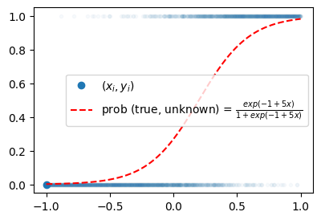
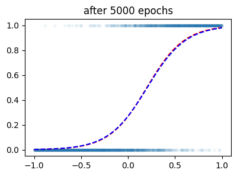

# {{<video https://youtu.be/playlist?list=PLQqh36zP38-yQTdybfgfAlnXsuJu2hfw1&si=ouac6dB6esRzkdT7 >}}03wk-1: 파이토치식 코딩패턴 (2), 로지스틱-ToyData1, 로지스틱-ToyData2

1. 강의영상
2. Imports
import torch
import matplotlib.pyplot as plt plt.rcParams['figure.figsize'] = (4.5, 3.0)3. 파이토치식 코딩패턴 (2)
데이터
torch.manual_seed(43052)
x,_ = torch.randn(100).sort()
eps = torch.randn(100)*0.5
X = torch.stack([torch.ones(100),x],axis=1)
W = torch.tensor([[2.5],[4.0]])
y = X@W + eps.reshape(100,1)
x = X[:,[1]]A. 기타 가능한 코드
# 방법1 – net에서 bias를 사용
# step1을 위한 사전준비
net = torch.nn.Linear(
in_features=1,
out_features=1,
bias=True
) # net(x) = x@net.weight.T + net.bias
net.bias.data = torch.tensor([-5.0])
net.weight.data = torch.tensor([[10.0]])
# step2를 위한 사전준비
loss_fn = torch.nn.MSELoss()
# step4를 위한 사전준비
optimizr = torch.optim.SGD(net.parameters(),lr=0.1)
for epoc in range(30):
# step1: yhat
yhat = net(x)
# step2: loss
loss = loss_fn(yhat,y)
# step3: 미분
loss.backward()
# step4: update
optimizr.step()
optimizr.zero_grad()net.bias.data, net.weight.data(tensor([2.4290]), tensor([[4.0144]]))#
# 방법2 – net를 쓰지않고 optimizer를 사용하는 방법 (1)
# step1을 위한 사전준비
what = torch.tensor(10.0,requires_grad=True)
bhat = torch.tensor(-5.0,requires_grad=True)
# step2를 위한 사전준비
loss_fn = torch.nn.MSELoss()
# step4를 위한 사전준비
optimizr = torch.optim.SGD([bhat,what],lr=0.1)
for epoc in range(30):
# step1: yhat
yhat = what*x+bhat
# step2: loss
loss = loss_fn(yhat,y)
# step3: 미분
loss.backward()
# step4: update
optimizr.step()
optimizr.zero_grad()what,bhat(tensor(4.0144, requires_grad=True), tensor(2.4290, requires_grad=True))#
# 방법3 – net를 쓰지않고 optimizer를 사용하는 방법 (2)
# step1을 위한 사전준비
What = torch.tensor([[-5.0],[10.0]],requires_grad=True)
# step2를 위한 사전준비
loss_fn = torch.nn.MSELoss()
# step4를 위한 사전준비
optimizr = torch.optim.SGD([What],lr=0.1)
for epoc in range(30):
# step1: yhat
yhat = X@What
# step2: loss
loss = loss_fn(yhat,y)
# step3: 미분
loss.backward()
# step4: update
optimizr.step()
optimizr.zero_grad()Whattensor([[2.4290],
[4.0144]], requires_grad=True)#
B. 잘못된(?) 코드
# step1을 위한 사전준비
net = torch.nn.Linear(
in_features=2,
out_features=1,
)
net.weight.data = torch.tensor([[-5.0, 10.0]])
# step2를 위한 사전준비
loss_fn = torch.nn.MSELoss()
# step4를 위한 사전준비
optimizr = torch.optim.SGD(net.parameters(),lr=0.1)
for epoc in range(30):
# step1: yhat
yhat = net(X)
# step2: loss
loss = loss_fn(yhat,y)
# step3: 미분
loss.backward()
# step4: update
optimizr.step()
optimizr.zero_grad()net.weightParameter containing:
tensor([[-1.2161, 4.0080]], requires_grad=True)- 결과시각화
plt.plot(x,y,'o')
plt.plot(x,yhat.data,'--')
plt.title(f'net.weight={net.weight.data.reshape(-1)}');
- 나쁘지 않은 이유?
net.weightParameter containing:
tensor([[-1.2161, 4.0080]], requires_grad=True)net.biasParameter containing:
tensor([3.6610], requires_grad=True)3. 로지스틱 – ToyData1
A. \(\hat{\bf y} = ??\)
- \(X\)를 가지고 \(y\)를 맞추는 아래와 같은 문제
x = torch.tensor([-6,-5,-4,-3,-2,-1, 0, 1, 2, 3, 4, 5, 6.0]).reshape(-1,1)
y = torch.tensor([ 0, 0, 0, 0, 0, 0, 1, 0, 1, 1, 1, 1, 1]).reshape(-1,1)
plt.plot(x,y,'o')
- yhat이 굳이 0 혹은 1이어야 할까?
- (회귀문제를 떠올리며) 우리가 맞추고 싶은건 사실 \(y_i\) 자체가 아니라 \(y_i\)를 만들어내는 underlying 아니었어?
- 아래와 같이 모형화 하면?
plt.plot(x,y,'o', label=r"observed data (with error) = $(x_i,y_i)$")
plt.plot(x,torch.exp(x)/(1+torch.exp(x)),'o--', label = "underlying (without error)")
plt.legend()
- 우리가 예측하고 싶은건 랜덤하게 나오는 오차가 아니야. (만약 예측할 수 있다면 이미 랜덤이 아닌걸?)
B. \(\hat{\bf y} = \frac{\exp(\text{linr}({\bf X}))}{1+\exp(\text{linr}({\bf X}))}\)
- 걱정: 산점도가 꼭 아래와 같은 방식이 아니라면 어쩌지?
plt.plot(x,y,'o')
- \(x\)가 증가할수록 \(y\)가 0이 된다면?
- 0근처에서 변화가 일어나지 않고 2근처에서 변화가 일어난다면?
- 변화가 좀 더 급하게 (혹은 완만하게 일어난다면?)
- 걱정해결
#plt.plot(x,y,'o', label=r"observed data (with error) = $(x_i,y_i)$")
plt.plot(x,torch.exp(x)/(1+torch.exp(x)),'o--', label = "underlying type1 (without error)", color="C1")
plt.plot(x,torch.exp(5*x)/(1+torch.exp(5*x)),'o--', label = "underlying type2 (without error)", color="C2")
plt.legend()
Note
회귀 vs 로지스틱
- \({\bf X} \to {\bf y}\) 에 대한 패턴이 \(\text{linr}({\bf X}) \approx {\bf y}\) 이라면 회귀!
- \({\bf X} \to {\bf y}\) 에 대한 패턴이 \(\frac{\exp(\text{linr}({\bf X}))}{1+\exp(\text{linr}({\bf X}))} \approx {\bf y}\) 이라면 로지스틱!
4. 로지스틱 – ToyData2
A. 로지스틱 모형
- \(x\)가 커질수록 \(y=1\)이 잘나오는 모형은 아래와 같이 설계할 수 있음 <— 외우세요!!!
\(y_i \sim {\cal B}(\pi_i),\quad\) where \(\pi_i = \frac{\exp(w_0+w_1x_i)}{1+\exp(w_0+w_1x_i)} = \frac{1}{1+\exp(-w_0-w_1x_i)}\)
\(\hat{y}_i= \frac{\exp(\hat{w}_0+\hat{w}_1x_i)}{1+\exp(\hat{w}_0+\hat{w}_1x_i)}=\frac{1}{1+\exp(-\hat{w}_0-\hat{w}_1x_i)}\)
\(loss= - \sum_{i=1}^{n} \big(y_i\log(\hat{y}_i)+(1-y_i)\log(1-\hat{y}_i)\big)\) <— 외우세요!!
- 회귀모형과 로지스틱 모형의 비교
- 회귀모형: \(y_i \sim {\cal N}(w_0+w_1x_i, \sigma^2)\)1
- 로지스틱: \(y_i \sim {\cal B}\big(\frac{\exp(w_0+w_1x_i)}{1+\exp(w_0+w_1x_i)}\big)\)
1 원래는 이렇게 썼었지.. \(y_i = w_0 + w_1x_i + \epsilon_i \quad \epsilon_i \sim {\cal N}(0,\sigma^2)\)
- 우리가 예측하고 싶은것
- 회귀모형: 정규분포의 평균을 예측하고 싶음. 즉 \(w_0+w_1x_i\)를 예측하고 싶음. 예측값으로는 \(\hat{w}_0 + \hat{w}_1x_i\)를 사용!
- 로지스틱: 베르누이의 평균을 예측하고 싶음. 즉 \(\frac{\exp(w_0+w_1x_i)}{1+\exp(w_0+w_1x_i)}\)를 예측하고 싶음. 예측값으로는 \(\frac{\exp(\hat{w}_0+\hat{w}_1x_i)}{1+\exp(\hat{w}_0+\hat{w}_1x_i)}\)를 사용!
B. 데이터
x = torch.linspace(-1,1,2000).reshape(2000,1)
w0 = -1
w1 = 5
u = w0 + x*w1 # 선형변환이네?
v = torch.exp(u) / (1+torch.exp(u))
y = torch.bernoulli(v)plt.plot(x,y,'.',alpha=0.03)
plt.plot(x[0],y[0],'o',label=r"$(x_i,y_i)$",color="C0")
plt.plot(x,v,'--r',label=r"prob (true, unknown) = $\frac{exp(-1+5x)}{1+exp(-1+5x)}$")
plt.legend()
우리의 목적: \(x_i\)가 들어가면 빨간곡선 \(\hat{y}_i\)의 값을 만들어주는 mapping을 학습해보자.
C. Step1: net 설계 (모델링)
- 최초의 곡선을 그려보자. (\(net: x \to yhat\) 을 수행하는 네트워크를 설계해보자는 의미)
w0hat = -0.8
w1hat = -0.3def sigmoid(x):
return torch.exp(x)/(1+torch.exp(x))plt.plot(x,y,'.',alpha=0.03)
plt.plot(x[0],y[0],'o',label=r"$(x_i,y_i)$",color="C0")
plt.plot(x,v,'--r',label=r"prob (true, unknown) = $\frac{exp(-1+5x)}{1+exp(-1+5x)}$")
plt.plot(x,sigmoid(w0hat + w1hat*x),'--b', label=r"prob (estimated) = $(x_i,\hat{y}_i)$ -- first curve")
plt.legend()
- w0hat + w1hat*x 이 부분을 torch.nn.Linear(bias = False)로 구현
X = torch.concat([torch.ones(2000).reshape(-1,1),x],axis=1)
l1 = torch.nn.Linear(in_features=2, out_features=1, bias = False)
l1.weightParameter containing:
tensor([[-0.6863, -0.1951]], requires_grad=True)l1.weight.data = torch.tensor([[-0.8, -0.3]])l1(X), w0hat + w1hat*x # 똑같죠(tensor([[-0.5000],
[-0.5003],
[-0.5006],
...,
[-1.0994],
[-1.0997],
[-1.1000]], grad_fn=<MmBackward0>),
tensor([[-0.5000],
[-0.5003],
[-0.5006],
...,
[-1.0994],
[-1.0997],
[-1.1000]]))- w0hat + w1hat*x 이 부분을 torch.nn.Linear(bias = True)로 구현
#X = torch.concat([torch.ones(2000).reshape(-1,1),x],axis=1)
l1 = torch.nn.Linear(in_features=1, out_features=1)
l1.weight, l1.bias(Parameter containing:
tensor([[0.8917]], requires_grad=True),
Parameter containing:
tensor([-0.7840], requires_grad=True))l1.weight.data = torch.tensor([[-0.3]])
l1.bias.data = torch.tensor([-0.8])l1(x), w0hat + w1hat*x # 이것도 똑같죠!(tensor([[-0.5000],
[-0.5003],
[-0.5006],
...,
[-1.0994],
[-1.0997],
[-1.1000]], grad_fn=<AddmmBackward0>),
tensor([[-0.5000],
[-0.5003],
[-0.5006],
...,
[-1.0994],
[-1.0997],
[-1.1000]]))- 내가만든 sigmoid 대신에 토치에서 제공하는 sigmoid 사용
a1 = torch.nn.Sigmoid()sigmoid(l1(x)), a1(l1(x)) # 똑같아요(tensor([[0.3775],
[0.3775],
[0.3774],
...,
[0.2499],
[0.2498],
[0.2497]], grad_fn=<DivBackward0>),
tensor([[0.3775],
[0.3775],
[0.3774],
...,
[0.2499],
[0.2498],
[0.2497]], grad_fn=<SigmoidBackward0>))- 지금까지의 구현 확인
plt.plot(x,y,'.',alpha=0.03)
plt.plot(x[0],y[0],'o',label=r"$(x_i,y_i)$",color="C0")
plt.plot(x,v,'--r',label=r"prob (true, unknown) = $\frac{exp(-1+5x)}{1+exp(-1+5x)}$")
plt.plot(x,sigmoid(w0hat + w1hat*x),'--b', label=r"prob (estimated) = $(x_i,\hat{y}_i)$ -- first curve")
plt.plot(x,a1(l1(x)).data,'--b', label=r"prob (estimated) = $(x_i,\hat{y}_i)$ -- first curve with $(a_1 \circ l_1)(x)$")
plt.legend()
- 관찰: 지금 아래의 구조이다.
\[{\boldsymbol x} \overset{l_1}{\to} {\boldsymbol u} \overset{a_1}{\to} {\boldsymbol v} = \hat{\boldsymbol y}\]
- 소망: 함수 \(l_1, a_1\) 의 합성을 하나로 묶어서
\[(a_1\circ l_1)({\boldsymbol x}) := net({\boldsymbol x})\]
이러한 기능을 하는 하나의 함수 \(net\)을 만들 수 없을까?
net = torch.nn.Sequential(l1,a1) #l1을 취하고 그다음에 a1을 취하라는 의미net(x), a1(l1(x)), sigmoid(w0hat+ w1hat*x)(tensor([[0.3775],
[0.3775],
[0.3774],
...,
[0.2499],
[0.2498],
[0.2497]], grad_fn=<SigmoidBackward0>),
tensor([[0.3775],
[0.3775],
[0.3774],
...,
[0.2499],
[0.2498],
[0.2497]], grad_fn=<SigmoidBackward0>),
tensor([[0.3775],
[0.3775],
[0.3774],
...,
[0.2499],
[0.2498],
[0.2497]]))- net 살펴보기: 초보버전 – “파이토치 30일만에 완성하기” 이런책에 보면 내용이 나올지도?
netSequential(
(0): Linear(in_features=1, out_features=1, bias=True)
(1): Sigmoid()
)- 처음에는 선형변환하고, 그담에는 Sigmoid를 수행하라는 의미
- net 살펴보기: 고수버전 – 책 안보고 코딩배우기
set(dir(net)) & {'__call__', '__getitem__'}{'__call__', '__getitem__'}- 좋은거 가지고 있네 ㅎㅎ
- callable 이면서 subscriptable 오브젝트..
lst = [11,22,33]
lst.__getitem__(-1) # lst[-1]33sigmoid.__call__(x) # sigmoid(x)tensor([[0.2689],
[0.2691],
[0.2693],
...,
[0.7307],
[0.7309],
[0.7311]])sigmoid[0] # 난 스크립터블 하지 않은걸? (= 난 리스트처럼 인덱싱 못해요)--------------------------------------------------------------------------- TypeError Traceback (most recent call last) Cell In[45], line 1 ----> 1 sigmoid[0] TypeError: 'function' object is not subscriptable
lst(x)# 난 컬러블하지 않은걸? (= 난 함수처럼 입력을 받고 출력을 주는 일은 못해요)--------------------------------------------------------------------------- TypeError Traceback (most recent call last) Cell In[53], line 1 ----> 1 lst(x) TypeError: 'list' object is not callable
net(x) # 컬러블이면서tensor([[0.0028],
[0.0028],
[0.0029],
...,
[0.9795],
[0.9796],
[0.9797]], grad_fn=<SigmoidBackward0>)net[0],net[1] # 섭스크립터블(Linear(in_features=1, out_features=1, bias=True), Sigmoid())_l1, _a1 = net # 언패킹!! (섭스크립터블하니까..)_l1.weight, _l1.bias # 내가 설정한 웨이트도 그대로 들어가있음(Parameter containing:
tensor([[-0.3000]], requires_grad=True),
Parameter containing:
tensor([-0.8000], requires_grad=True))D. Step 1~4
net = torch.nn.Sequential(
torch.nn.Linear(in_features=1, out_features=1),
torch.nn.Sigmoid()
)
l1, a1 = net # 네트워크는 섭스크립터블 오브젝트이니까..
l1.weight.data = torch.tensor([[-0.3]])
l1.bias.data = torch.tensor([-0.8])
#loss_fn = torch.nn.MSELoss() # -- 이 코드 일단 쓰지 않을게여
optimizr = torch.optim.SGD(net.parameters(),lr=0.25)
#---#
for epoc in range(100):
## 1
yhat = net(x)
## 2
loss = torch.mean((y-yhat)**2)
## 3
loss.backward()
## 4
optimizr.step()
optimizr.zero_grad()plt.plot(x,y,'.',alpha=0.05)
plt.plot(x,v,'--r')
plt.plot(x,yhat.data,'--b')
plt.title('after 100 epochs')Text(0.5, 1.0, 'after 100 epochs')
for epoc in range(4900):
## 1
yhat = net(x)
## 2
loss = torch.mean((y-yhat)**2)
## 3
loss.backward()
## 4
optimizr.step()
optimizr.zero_grad()plt.plot(x,y,'.',alpha=0.05)
plt.plot(x,v,'--r')
plt.plot(x,yhat.data,'--b')
plt.title('after 5000 epochs')Text(0.5, 1.0, 'after 5000 epochs')
성공했나?